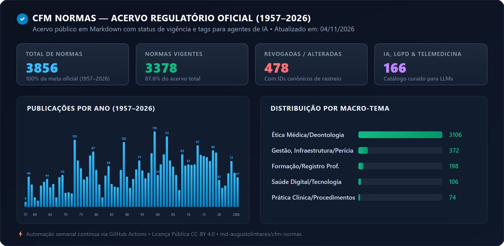

CFM Normas
Repositório aberto e estruturado do acervo histórico do Conselho Federal de Medicina, de 1957 a 2026: normas em Markdown, com o status de vigência de cada uma, para médicos, pesquisadores, desenvolvedores, juristas e agentes de IA.
- 3.856normas, de 1957 a 2026
- 70anos, sem nenhum ano vazio
- 166na trilha de IA, dados e telemedicina
- 3.378vigentes em 04/11/2026
Limites, antes de tudo. Fonte de consulta organizada, não assessoria jurídica. Projeto independente, sem vínculo com o CFM. Concluído para resoluções, pareceres e recomendações de 1957 a 2026; os despachos jurídicos e as portarias administrativas internas ficaram de fora. O status de vigência vale para 04/11/2026.
Ficha
- Propósito
- Colocar as normas do CFM num acervo público e aberto, de uso livre (licença CC BY 4.0) e, junto com isso, desenvolver as competências abaixo.
- Contexto
- Projeto pessoal, público e em código aberto. Cobertura histórica concluída em 04/11/2026 para resoluções, pareceres e recomendações (1957 a 2026).
- Meu papel
- Sozinho, da leitura do portal do CFM à estrutura dos dados e à automação. Construí com programação assistida por IA; o problema, o escopo e as decisões foram meus.
- Competência que o caso prova
- Desenhar infraestrutura de dados abertos para uso por IA em saúde, com rastreabilidade de vigência, governança (esquema e licença abertos), limites declarados e automação de custo zero.
- Ferramentas
- Markdown com metadados YAML, catálogos em JSON, JSON Schema (Draft-07), GitHub Actions · programação assistida por IA
- Evidência
- Repositório público no GitHub (abre em nova aba), com os catálogos, o painel e o esquema
Propósito
O projeto existe, antes de tudo, para dar ao público um acervo aberto e confiável das normas do CFM.
Historicamente, a classe médica enfrenta uma grande dispersão de fontes de informação, o que muitas vezes dificulta o alinhamento e o compartilhamento ágil de conhecimento regulatório entre profissionais da saúde.
Quis compartilhar esse conhecimento e aproximar a comunidade médica, pesquisadores, desenvolvedores e juristas em torno de uma base acessível e confiável. São 3.856 normas, de 1957 a 2026, em formato aberto e de uso livre. A cobertura histórica está completa para resoluções, pareceres e recomendações; o acervo continua sendo atualizado toda semana.
A estrutura foi pensada para dois leitores: profissionais de saúde e agentes de inteligência artificial que conferem conformidade ética, regulatória e técnica no exercício da medicina.
Desenvolver as competências descritas na ficha foi o segundo propósito, e vem junto: o acervo é o produto, e a infraestrutura é a prova de como eu penso um produto de dados.
Problema
- Fontes dispersas. Normas éticas, pareceres sobre procedimentos novos e regras de publicidade e telemedicina ficam espalhados em sistemas lentos e PDFs soltos.
- Risco de citar norma revogada. Um agente de IA que consulta a web sem uma fonte estruturada pode citar uma norma já revogada ou alterada. Na medicina, seguir uma norma que perdeu a vigência pode levar a uma infração ética. Esse foi o risco que eu quis reduzir.
- Portal pouco legível para máquinas. O portal oficial mostra os PDFs dentro de um visualizador, o que dificulta a leitura por agentes de IA e por pipelines de busca semântica sem uma raspagem pesada.
O que foi feito
- Acervo: 3.856 normas do CFM de 1957 a 2026 (2.458 resoluções, 1.384 pareceres e 14 recomendações), cada uma em Markdown, com um cabeçalho YAML padronizado. Todos os anos do período têm pelo menos uma norma.
- Vigência no tempo: cada norma traz o status (vigente, revogada ou suspensa). Em 04/11/2026: 3.378 vigentes, 475 revogadas e 3 suspensas. Das revogadas, 467 apontam a norma que as alterou (campo
alterada_por_ids). - Temas: 5 macro-temas (como ética médica e saúde digital) e 17 tags (como telemedicina, prontuário eletrônico e inteligência artificial).
- Trilha de IA e dados: um catálogo à parte com 166 normas que tocam em inteligência artificial, proteção de dados e telemedicina. Quatro marcam IA, 128 marcam proteção de dados e 54 marcam telemedicina; uma norma pode estar em mais de um grupo. A trilha inclui a Resolução CFM 2.454/2026 (uso da inteligência artificial na medicina), a 2.314/2022 (telemedicina) e as normas de cirurgia robótica.
- Consulta por agentes de IA: os catálogos em JSON trazem um índice por tema e por tag. O agente pede uma tag, recebe a lista de identificadores e lê cada norma direto pela URL, sem banco vetorial e sem baixar o repositório. O catálogo completo tem 4,7 MB; o da trilha de IA, 217 KB.
- Governança: um esquema JSON Schema (Draft-07) descreve cada norma, e cada uma guarda o checksum SHA-256 do seu conteúdo. Licença aberta CC BY 4.0.
- Atualização automática: um fluxo do GitHub Actions roda todo domingo às 01:00 (horário de Brasília), consulta o ano corrente no portal do CFM e usa o manifesto de checksums para reescrever só o que mudou. Depois, regenera os catálogos, o painel e o cartão de métricas do README. Teve execuções com sucesso em 25/10 e em 01/11/2026.

Decisões
- Conselho Federal, não os 27 regionais. Escolhi o CFM, que edita as normas de alcance nacional, e evitei manter 27 portais estaduais diferentes entre si.
- Metadados do próprio portal. Descobri que o portal já entrega os metadados em JSON dentro da página. Usei esse JSON em vez de raspar tabelas em HTML, que quebram com facilidade.
- Nenhum PDF guardado. Cada PDF é lido em memória (
io.BytesIO) e convertido direto para Markdown. O repositório não tem nenhum arquivo PDF. - Atualização que só reescreve o que mudou. O manifesto guarda o checksum de cada norma; rodar o fluxo de novo não gera mudança se nada mudou no portal.
- Coleta por décadas. Fiz o acervo em cinco fases, do mais recente para o mais antigo: 2020 a 2026, 2010 a 2019, 2000 a 2009, 1990 a 1999 e 1957 a 1989.
- Painel que abre com dois cliques. Os dados do painel vão embutidos no próprio arquivo, então ele abre direto no navegador, sem servidor.
Resultados
Medidos em 04/11/2026:
- 3.856 normas em 70 anos. Todas as resoluções, pareceres e recomendações de 1957 a 2026 que o portal lista.
- 166 normas na trilha de IA, dados e telemedicina, prontas para um agente consultar por tema.
- 28 MB para as normas em Markdown, e 4,7 MB para o catálogo completo.
- R$ 0,00 por mês: hospedagem e automação no plano gratuito do GitHub.
Limites
- Não é assessoria jurídica. O acervo organiza dados públicos e ajuda a ancorar uma IA em fontes oficiais. Não substitui consulta jurídica nem parecer de conselho regional para um caso concreto.
- Vigência na data da última atualização. O status vale para 04/11/2026. Para uma decisão com consequência, conferir no portal do CFM.
- "Concluído" tem escopo. A cobertura é completa para resoluções, pareceres e recomendações. Os despachos jurídicos ficam para um módulo futuro, e as portarias administrativas internas do CFM ficaram de fora.
- A ligação entre normas vai só num sentido. O campo
revoga_idsexiste no esquema, mas está vazio. Hoje a ligação vai da norma revogada para a que a alterou, e não o contrário. - A trilha de IA é um filtro por tema, feito de forma automática. Ela aponta onde olhar, mas não diz o que cada norma exige, e pode incluir normas que só tocam o assunto de passagem. Só quatro marcam inteligência artificial.
- A automação semanal olha só o ano corrente. As cargas históricas foram feitas à parte.
Ver o repositório no GitHub (abre em nova aba)Catálogo de IA e privacidade (abre em nova aba)Caso anterior: Assistente de Prescrição